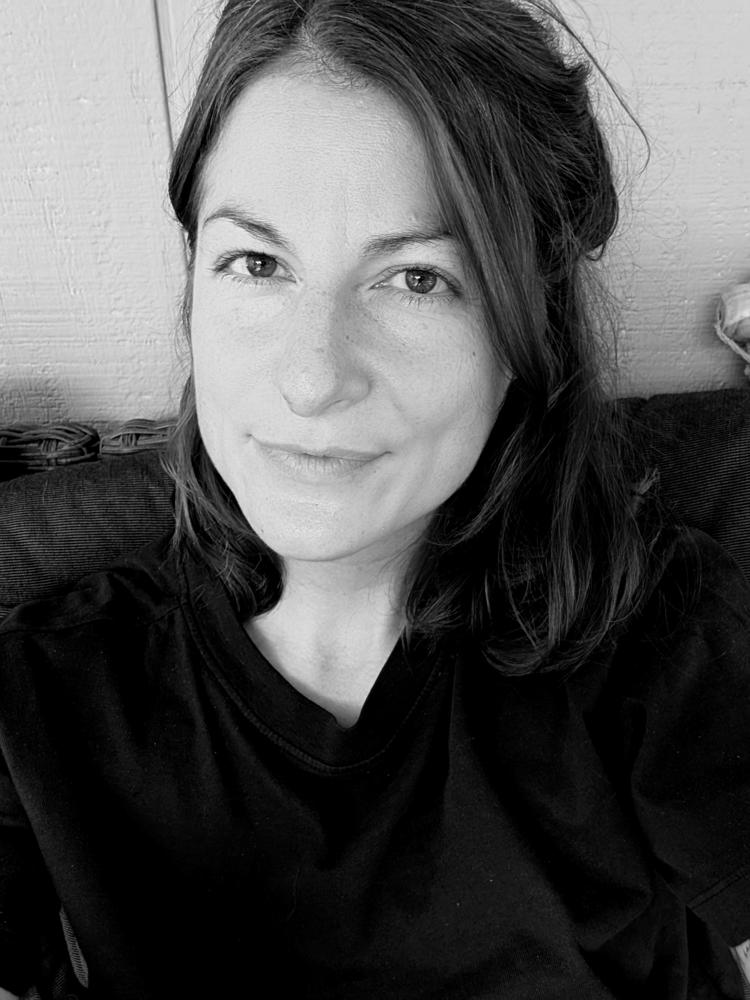

I am currently an ASP Postdoctoral Fellow at the NSF National Center for Atmospheric Research (NCAR) in Boulder (Colorado) where I am doing research in the Capacity Center for Climate & Weather Extremes section. I am holding a Doctor's degree in Atmospheric Sciences and my main research interests are regional precipitation changes and precipitation-related extreme weather in relation to climate change. How the nature, frequency, and intensity of precipitation changes in a warmer climate is an essential question for how we build our future societes, because such changes are directly related to water resources and natural hazards. Learn more about my specific research interests here.
While my research focuses on the physical aspects of the climate system and climate change, I am also interested in questions related to sustainability transitions and climate justice. A dialogue between scientists, decision-makers and civil society is needed in many sustainability questions, whether on global, regional or local scale.